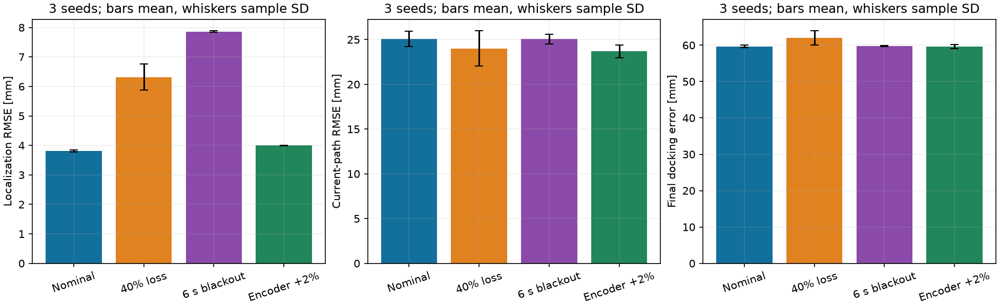
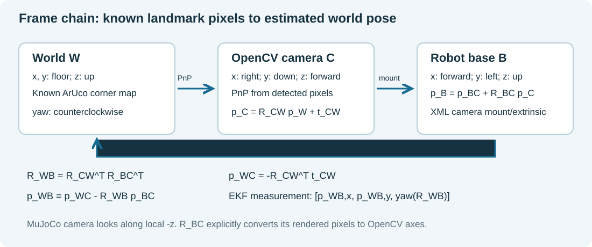
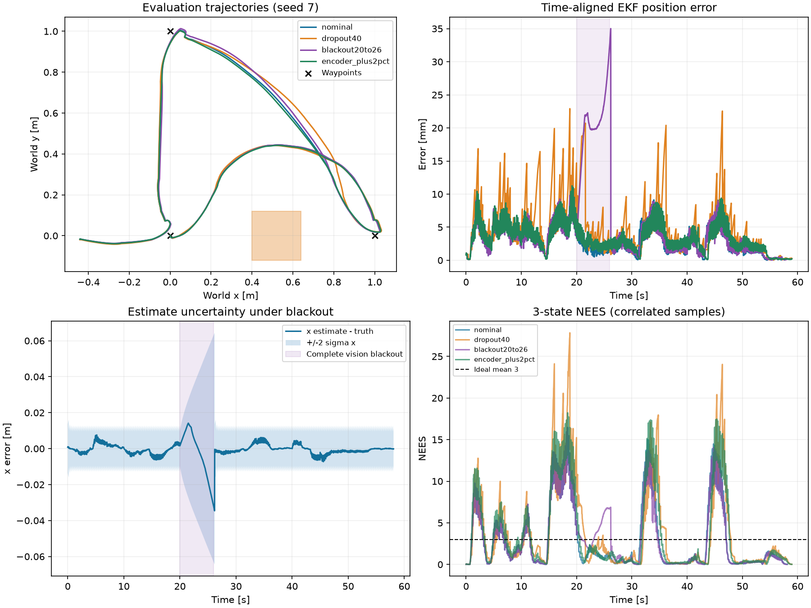

Demonstration and code
The five-minute video shows the nominal mission, a camera-observation dropout trial, uncertainty and quantitative results.
View code repository · Download complete code and results (ZIP) · View simulation source
Visual waypoint navigation and ArUco docking
41014 Sensors and Control in Mechatronics Systems
Group 19 — Enqian Tang, 25646922
Track A · approved individual group
This project connects sensing, state estimation and feedback control in a MuJoCo navigation task. A differential-drive robot visits three waypoints, avoids an obstacle and returns to an ArUco-marked charging station. The robot is a simplified TurtleBot3-style model with wheel encoders, a downward camera, a forward camera and a simulated 2D LiDAR.
Wheel odometry provides frequent motion estimates, but it accumulates error when the wheels slip. I use an EKF to correct that prediction with camera pose measurements from a known marker map. LiDAR supplies the obstacle map for A*, and a local LQR tracker turns the planned path into velocity commands. A separate encoder-based wheel-speed loop applies the motor torques. The controller receives estimated position and heading; simulator pose is reserved for sensor generation, evaluation and display.
The route uses three waypoints: (1,0) m on the far side of the obstacle, (0,1) m across the room, then (0,0) m at the start, before visual docking. This keeps obstacle avoidance, a change of travel direction and a return leg before docking. The brief does not prescribe four waypoints. The repeated experiments cover nominal operation, random camera-observation loss, a six-second blackout and encoder scale error. The current measurements are reported in the results section; the previous four-waypoint results are not mixed into this version.
The three-waypoint route completes in 58.29 s on average in nominal trials, including the one-second charging demonstration. Mean localization RMSE is 3.81 mm and mean final docking error is 59.65 mm. These measure estimator accuracy and final stopping position respectively.
Reading the project
Design explains the model, coordinate frames, camera geometry, EKF and controller. Results contains the repeated trials, uncertainty plots and measurement-noise sensitivity. Discussion connects those results to the design choices and remaining weaknesses.

Install and reproduce
Windows 11 with an OpenGL-capable graphics driver. Tested with Python 3.11.9, MuJoCo 3.15.0, NumPy 2.4.6 and OpenCV contrib 4.11.0.86. A fresh Python 3.12.14 environment was also installed from the submitted lockfile and completed the nominal mission; six regression checks pass on the current version. Rendering is still needed in headless mode; a GPU/display context is required. Linux/macOS installation and rendering have not been verified.
From the repository root in PowerShell:
Extract the complete project folder before running it. Opening a Python file directly inside a ZIP creates a temporary location and may select a different Python installation. In VS Code, open the project folder and select its .venv interpreter. The included launch configuration uses that environment for debugging.
py -3.11 -m venv .venv
.\.venv\Scripts\python.exe -m pip install -r requirements-lock.txt
.\.venv\Scripts\python.exe -m unittest discover -s tests -v
.\.venv\Scripts\python.exe tools\calibrate_validate.py
.\.venv\Scripts\python.exe run_sim.py --headless --seed 7 --output results/reproduced_nominal --video
Use py -3.12 if that is your installed version. GUI demonstration:
.\.venv\Scripts\python.exe run_sim.py --camera-preview
After installing the environment, START_DEMO.bat launches the same GUI demonstration by double-click. In VS Code, select Track A simulation in Run and Debug and press F5.
Space pauses; R resets; Esc closes the MuJoCo window. After a one-second charging demonstration the GUI holds the completed view until it is closed. Close the viewer to save GUI logs. Headless mode stops after one second of charging or at the chosen time budget; exit 1 means the run did not finish charging or recorded contact. Analysis applies the stricter independent docking-error criteria described in the design document.
Repeat the complete declared matrix and regenerate figures:
.\.venv\Scripts\python.exe tools\run_experiments.py --workers 2
.\.venv\Scripts\python.exe run_sim.py --headless --seed 7 --r-scale .1 --output results/r01_s7
.\.venv\Scripts\python.exe run_sim.py --headless --seed 7 --r-scale 10 --output results/r10_s7
.\.venv\Scripts\python.exe -m pip install -r requirements-analysis.txt
.\.venv\Scripts\python.exe tools\analyze_results.py
.\.venv\Scripts\python.exe tools\build_page.py
The complete-vision-loss trial intentionally returns 1 and is preserved as a failure case. Do not delete or relabel it as successful. Rerunning overwrites same-named results; copy the results directory first if you want to preserve this submission's data. PNG plots and the static project page can be viewed without installing analysis packages.
Files
The runtime is in run_sim.py. Its classes separate sensor generation, estimation, planning, control, evaluation and recording. track_a_scene.xml defines the physical scene and camera mounts; landmark_map.json supplies the known marker corners; assets/ contains the marker textures. The scripts in tools/ run the calibration checks, repeated trials and analysis. tests/ contains the numerical and feedback-boundary checks. Raw measurements and the parameters used for each trial are kept in results/.
Project notes
This is an individual project. My responsibility covers the model, sensing, estimation, control, experiments and demonstration. The development notes identify the starting files and route revision. The simulation is not a manufacturer-validated robot model, and no hardware result is reported.
Code is available in the GitHub repository. Watch the five-minute demonstration for the nominal run, camera-observation dropout trial and quantitative results.
Model, sensing, estimation and control
Scope and architecture
The route has three waypoints: (1,0) m beyond the obstacle, (0,1) m across the room, and (0,0) m at the start. After the return, the robot approaches the charging station and shows one second of simulated charging. This gives an outward detour, a cross-room leg and a return for estimated-state tracking.
Track A, simulation only. The MJCF is a simplified TurtleBot3-style differential-drive robot, not a manufacturer-validated TurtleBot3 dynamic model. Radius 0.05 m and track 0.21 m come from this submitted scene. A caster, wheel-ground contact and motor torque are simulated by MuJoCo. The task is three position waypoints, obstacle detour, and visual alignment with a virtual charging connector. There is no physical electrical contact sensor and no hardware result.
world W --known landmark corners--> rendered onboard RGB pixels
| |
wheel joint increments -> odometry -> EKF <- ArUco / PnP / rigid transforms
|
LiDAR ranges -> grid + A* <------- estimated world pose
| |
+--> local target + LQR / turn mode -> wheel targets
noisy encoder wheel speed -----------------> torque inner loop -> physics
front ArUco relative station -> estimated dock position -> docking supervisor
physics truth ----> Evaluator / CSV / plots / video ONLY
SensorSimulator accesses MuJoCo geometry to synthesise sensor measurements. This is the simulator sensor boundary, not a pose observation passed directly to the controller. The controller receives only the estimated planar pose and a target; the torque loop receives noisy quantised encoder increments. Evaluation code in Demo.tick/close reads truth to log metrics after commands have already been selected, and never writes that truth into estimation, planning or control. The overhead camera is presentation only.
Coordinates and transforms

World W: x and y lie in the floor, z is up; SI metres, seconds, radians. Base B: x forward, y left, z up; yaw is counterclockwise about z. The base origin is the chassis freejoint origin. Wheel centres are 0.045 m forward of that origin, so treating its motion as an ideal axle-centre unicycle is an approximation. Camera C uses OpenCV x right, y down, z forward; MuJoCo camera optical direction is its negative local z, requiring the explicit conversion below.
R_BC maps OpenCV camera vectors into base coordinates; p_BC is the camera optical centre in base coordinates:
| Camera | p_BC [m] | R_BC | image / FOV |
|---|---|---|---|
| downward | [0.14,0,0.60] | diag(1,-1,-1) | 480x480, vertical 90 deg |
| forward | [-0.04,0,0.22] | [[0,0,1],[-1,0,0],[0,-1,0]] | 480x480, vertical 65 deg |
PnP returns p_C = R_CW p_W + t_CW. Then R_WB = R_CW^T R_BC^T; p_WC = -R_CW^T t_CW; p_WB = p_WC - R_WB p_BC. Yaw = atan2(R_WB[1,0], R_WB[0,0]). A station point is measured as p_BS = p_BC + R_BC (R_CW p_WS + t_CW), then mapped into W using the EKF pose. Thus docking position originates in pixels and EKF pose. The station's known orientation sets desired heading pi; its true scene location is used only for evaluation.
Marker dictionary DICT_4X4_50. Floor marker black-square side = 0.14200/270 = 0.103704 m; station black-square side = 0.30200/270 = 0.222222 m. The image's white border must not be counted as black-square size. Ordered world corners are in landmark_map.json. This is localization against a known map, not SLAM.
Motion model and local analysis
State x=[p_x,p_y,psi]^T, velocity input u=[v,omega]^T. Continuous model:
p_x_dot = v cos(psi), p_y_dot = v sin(psi), psi_dot = omega.
v = r(w_R+w_L)/2, omega = r(w_R-w_L)/b.
At each 0.02 s controller step (physics 0.002 s, ten substeps), encoders supply wheel travel d_L,d_R. With d_s=(d_L+d_R)/2, d_a=(d_R-d_L)/b, a=psi+d_a/2:
f(x,d) = [p_x+d_s cos(a), p_y+d_s sin(a), wrap(psi+d_a)].
F = [[1,0,-d_s sin(a)],[0,1,d_s cos(a)],[0,0,1]].
No-slip planar kinematics, fixed wheel geometry, negligible roll/pitch in estimator, and a known initial pose are assumptions, not universal truths. Physics includes slip that this model omits.
The tracking error is reference minus robot expressed in a locally fixed reference frame: [along,cross,heading]. At reference speed 0.12 m/s and sample T=0.02 s:
A = [[1,0,0],[0,1,0.12*T],[0,0,1]]
B = [[-T,0],[0,0],[0,-T]].
The controllability matrix [B,AB,A^2 B] has rank 3 for nonzero reference speed. At zero speed the lateral row decouples and rank is 2; a stationary linearization cannot instantaneously correct lateral error. Turn-in-place and waypoint mode switching address large heading errors, outside the LQR's local assumptions. Stability of A-BK establishes only local unsaturated linear stability; it is not a proof for A*, mode switches, slip, saturation or the entire mission.
Camera pose observation z=x+noise has H=I_3, giving local observability rank 3 wherever PnP is valid. Encoders alone give relative increments and cannot identify arbitrary initial global translation/yaw. During camera loss, EKF propagates with increasing covariance; restoring a valid observation restores absolute correction. LiDAR builds an obstacle map but is not fused as a localization observation in this version. Camera pose observability depends on known nondegenerate marker geometry and successful association, not solely on writing H=I.
Camera calibration and sensor noise
Analytic intrinsic calibration: f_x=f_y=240/tan(FOV_y/2), c_x=c_y=239.5 pixels. Thus downward f=240 px; forward f approximately 376.7245 px. Lens distortion is zero by renderer construction. Extrinsics come from the XML mounts and OpenCV-to-MuJoCo frame conversion. This is not a fitted real-camera calibration. tools/calibrate_validate.py independently samples 28 held-out pose/heading combinations and reports detection availability, base pose errors, station-relative errors and reprojection residuals. All errors use truth only in this validation harness. The exact generated evidence is in results/calibration_validation.json.
Noise: image Gaussian sigma=1 intensity unit per RGB channel, clipping to uint8; encoder quantisation 4096 counts/revolution plus travel noise sigma=15 micrometres per sample; LiDAR 120 rays over 360 degrees, max range 3 m, sigma=3 mm, sampled 5 Hz. Sensor noise uses a seeded generator. Range clipping and quantisation mean these distributions are not perfectly Gaussian.
Multi-marker PnP uses RANSAC: 100 iterations, 2.5 px threshold, at least eight inlier corners, followed by iterative refinement. Single marker uses planar IPPE. Poses with reprojection RMS >2 px or base height outside (0.02,0.18) m are discarded. Residual is sqrt(mean of squared pixel-coordinate errors), not RMS Euclidean 2D corner distance. The reported mean is over accepted poses; it omits failed detections. Detection quality, geometry and pose error are separate metrics. Long-range single-marker range is less reliable than nearby multi-marker localization; calibration results quantify this limitation.
State estimation
Initial mean [0,0,0], P0=diag(0.03,0.03,0.08)^2. Prediction Q=diag(2e-6,2e-6,8e-6) per 50 Hz step, in m^2,m^2,rad^2. Q is a conservative additive model-error allowance for slip/kinematic mismatch, not a fitted encoder covariance. Position observation R=diag(0.007,0.007,0.025)^2. These standard deviations exceed held-out static image errors to allow dynamic motion/geometry effects. They are chosen engineering allowances; they are not maximum-likelihood estimates from hardware.
Innovation uses wrapped yaw. S=P+R, squared Mahalanobis gate=25; accepted update K=P S^-1. Joseph covariance update (I-K)P(I-K)^T+KRK^T maintains numerical symmetry/positive covariance. This gate is a fixed design value, not the usual 95% chi-square threshold. Only valid camera poses reset camera age; a rejected valid pose currently resets age too, a limitation under sustained outliers.
CSV stores estimated position/yaw and 1-sigma values. Evaluation uses the exact same pre-physics time for truth and estimate. Position RMSE=sqrt(mean((xhat-x)^2+(yhat-y)^2)); yaw RMSE uses wrapped angular error. Raw odometry is logged as an estimator comparison using the same wheel increments and no camera correction. NEES=e^T P^-1 e is reported over correlated trajectory samples; its mean is diagnostic, not a formal independent-sample consistency test. Three-dimensional ideal Gaussian NEES has expected value 3, but nonlinearity, gating, correlation and model mismatch matter.
Path planning and feedback control
Discrete LQR solves the algebraic Riccati equation iteratively to 1e-9 change, maximum 5000 iterations. Cost Q_LQR=diag(4,14,4), R_LQR=diag(2,1.5). These are cost weights, unrelated to EKF noise Q/R. Cross-track weight 14 prioritises lateral path adherence; input weights limit aggressive corrections. Run tools/analyze_results.py for the actual gain, poles, rank and numerical residual.
u=[0.12,0]-K e (slow docking feedforward 0.06). Limits: v 0..0.16 m/s (docking 0..0.10), omega +/-1 rad/s, distance-dependent speed cap 0.8distance, angular cosine scaling. For point bearing error >0.75 rad, turn-in-place at clip(2.2error,+/-1). Wheels are limited +/-6 rad/s. Torque command = clip(0.15*(target wheel velocity - measured encoder wheel velocity),+/-0.20) N m, held over ten physics steps. No qvel feedback is used. Saturation and hybrid logic mean the implemented tracker is not a pure unconstrained LQR.
LiDAR grid 0.07 m, dimensions 35x33, origin [-0.7,-0.6]. Hit/free evidence is accumulated with bounded scores; cells with score >=2 occupied. A* uses 8-neighbour connectivity, no diagonal corner cutting. Inflation 0.245 m (0.17 m docking), replan every 0.5 s, lookahead 0.18 m. Unknown cells are not conservatively blocked: this is not a certified exploration planner. A forward ray cone +/-0.35 rad brakes translation below 0.24 m. Sensor origin and chassis clearance differ: minimum LiDAR range is not minimum body-surface clearance.
Waypoints [1,0],[0,1],[0,0] m use 0.075 m estimated arrival tolerance and 0.6 s hold. Stop errors in results are actual truth distance at the estimated arrival event. Dock goal = measured world station position+[0.20,0]; translation tolerance 0.06 m (alignment retains mode to 0.08 m); heading entry <0.07 rad. Charge supervisor requires position <=0.09 m, heading <=0.12 rad and station freshness <=2 s. Entry requires pose age <0.4 s and station age <0.6 s. A BLOCKED docking plan with a station observation older than 2 s clears that target and reacquires the marker before trying again. The relaxed retention threshold explains final heading/position being larger than entry limits. The result is alignment with a virtual connector, rather than a physical contact-docking test.
Virtual electrical model: 2.2 Ah, OCV=10.8+1.8*SOC, battery resistance 0.25 ohm, external equivalent 0.75 ohm, first-order RC transient 20 s, current capped 1 A, electrical time accelerated 60x. SOC can end below its initial value despite charging because the preceding mission consumes energy. One second of positive charging current is demonstrated; physical energy delivery is not.
Evaluation method
tools/run_experiments.py declares seeds 7,11,23 under nominal, 40% independent camera-pose dropout, 20..26 s complete vision blackout, and +2% encoder travel scale. The rendering still occurs during dropout; this tests missing observations, not realistic occlusion/illumination image degradation. Encoder scale tests wheel-distance calibration mismatch, not an externally applied force. A separate 100% vision-loss trial demonstrates a boundary failure. Small seeded trials in one scene do not establish real-world reliability. The complete-loss run is retained alongside the successful trials to show where this approach stops working.
Tracking RMSE is perpendicular distance from evaluation truth to the current A* polyline during tracking modes. It is spatial path following, not error to a timed trajectory; replanning changes the reference and can make it optimistic. Torque-squared integral (N^2 m^2 s) is a control-effort proxy, not energy. Contact count is contact samples, not unique collision events. Success requires all three waypoints, CHARGING with >=1 s positive charge, zero obstacle/wall/charger contacts, actual docking error <=0.09 m and heading <=0.12 rad. Simulator failure exits and nonzero statuses remain in stdout.
Repeated-trial results
Fresh runs from the submitted source; 3 seeds per condition. Mean +/- sample SD. Completion time includes a one-second charging demonstration.
| Condition | success | localization RMSE mm | path RMSE mm | dock error mm | time s | mean NEES |
|---|---|---|---|---|---|---|
| nominal | 3/3 | 3.81 +/- 0.03 | 25.08 +/- 0.85 | 59.65 +/- 0.34 | 58.29 +/- 0.12 | 2.92 +/- 0.02 |
| dropout40 | 3/3 | 6.32 +/- 0.44 | 24.00 +/- 1.97 | 62.02 +/- 1.91 | 58.61 +/- 0.32 | 3.77 +/- 0.09 |
| blackout20to26 | 3/3 | 7.86 +/- 0.02 | 25.07 +/- 0.55 | 59.78 +/- 0.11 | 58.23 +/- 0.12 | 3.16 +/- 0.04 |
| encoder_plus2pct | 3/3 | 4.00 +/- 0.01 | 23.69 +/- 0.72 | 59.61 +/- 0.51 | 59.01 +/- 0.09 | 3.61 +/- 0.06 |
Each 3/3 rate has a 95% Wilson interval approximately [0.44,1.00]; trials are few and share one scene. Zero contact samples were observed in successful trials. Path RMSE uses the changing planned polyline, so it is not a timed trajectory metric. Localization RMSE is not final docking error.

Trial detail
| Condition | seed | odom RMSE m | yaw RMSE rad | dock yaw rad | torque effort N^2 m^2 s |
|---|---|---|---|---|---|
| nominal | 7 | 0.4195 | 0.0240 | 0.0821 | 1.1716 |
| nominal | 11 | 0.4230 | 0.0238 | 0.0817 | 1.1803 |
| nominal | 23 | 0.4235 | 0.0239 | 0.0811 | 1.1816 |
| dropout40 | 7 | 0.4326 | 0.0335 | 0.0841 | 1.1989 |
| dropout40 | 11 | 0.4201 | 0.0309 | 0.0822 | 1.2038 |
| dropout40 | 23 | 0.4388 | 0.0323 | 0.0841 | 1.1797 |
| blackout20to26 | 7 | 0.4137 | 0.0306 | 0.0809 | 1.1722 |
| blackout20to26 | 11 | 0.4180 | 0.0308 | 0.0804 | 1.1730 |
| blackout20to26 | 23 | 0.4197 | 0.0313 | 0.0799 | 1.1827 |
| encoder_plus2pct | 7 | 0.5115 | 0.0266 | 0.0824 | 1.1744 |
| encoder_plus2pct | 11 | 0.5148 | 0.0268 | 0.0815 | 1.1764 |
| encoder_plus2pct | 23 | 0.5142 | 0.0271 | 0.0815 | 1.1875 |
Sensor validation
28 held-out poses: 28/28 base-pose detections; 8/28 station-relative detections. Base position RMSE 0.611 mm; yaw RMSE 0.000529 rad. Station-relative RMSE over detected cases 29.15 mm; max 78.60 mm. The three near-dock front-facing samples have station-relative RMSE 2.22 mm. Long-range oblique planar PnP depth is less constrained despite low pixel residual. Missing station detections are expected when facing away and are retained in raw results.
Failure boundary
100% camera observation loss, seed 7, 50 s evaluation budget: stage SEARCH DOCK, estimated waypoint counter 3/3 (not independently verified true arrivals), position RMSE 0.274 m, 0 contact samples. The run is a failed mission and is not included in the 12-trial success denominator. Without camera measurements, no visual station estimate is available, so the visual-docking requirement cannot be completed; odometry also accumulates slip error. This run does not claim a 240 s timeout test.
EKF measurement-noise sensitivity (one seed, exploratory)
| R multiplier | localization RMSE mm | mean NEES | path RMSE mm | torque effort | success |
|---|---|---|---|---|---|
| 0.1 | 1.745 | 1.222 | 25.069 | 1.182 | True |
| 1.0 | 3.777 | 2.941 | 24.110 | 1.172 | True |
| 10.0 | 11.831 | 5.964 | 25.814 | 1.244 | True |
The table compares measurement weighting, actual error and reported uncertainty on one seed. It is a sensitivity probe, not a statistically established optimum. The common baseline is retained across the repeated trials. Smaller R gives camera observations more weight; the resulting NEES depends on both actual error and posterior covariance.
For the interpretation of these trials and the limitations of the metrics, see Discussion.
Results and limitations
The route has three waypoints, (1,0), (0,1) and (0,0) m, followed by visual docking. The outward leg requires a LiDAR detour around the obstacle. The second leg crosses the room; the third returns to the start before the forward-camera docking approach. A four-corner room circuit is unnecessary for these checks.
The three-waypoint route completes in 58.29 s on average in nominal trials, including the one-second charging demonstration. Mean localization RMSE is 3.81 mm and mean final docking error is 59.65 mm. These measure estimator accuracy and final stopping position respectively.
Each of the four conditions uses three seeds. The recorded success counts are nominal: 3/3, dropout40: 3/3, blackout20to26: 3/3, encoder_plus2pct: 3/3. Mean localization RMSE is 6.32 mm under 40% random observation loss, 7.86 mm under a six-second blackout, and 4.00 mm with +2% encoder scale error. All reported results belong to the three-waypoint runtime and scene.
Continuous blackout leaves a longer interval of encoder-only prediction than scattered observation gaps. The uncertainty band expands during that interval and contracts after a usable observation returns. LiDAR continues mapping obstacles; it is not a substitute absolute-pose observation in this EKF.
Shortening the route exposed a case where an old station observation led to a blocked docking plan. If a docking plan is BLOCKED and the station measurement is older than two seconds, the robot now clears that target and searches for a new observation. It does not discard the target merely because an otherwise valid approach takes more than two seconds. This distinction avoids unnecessary repeated searches. A regression test covers the blocked/stale-target case.
Docking error is much larger than localization error because translation stops near the 60 mm arrival threshold before heading alignment. Connection retention uses wider position and angle thresholds. This is a virtual connector, not a physical contact experiment. The equivalent circuit is a small additional simulation of charge current and SOC, not evidence of a hardware charger.
With complete camera-observation loss, the run ends in SEARCH DOCK after 50.0 s, with 3/3 estimated waypoint arrivals and 0.274 m localization RMSE. It is a failed mission. Estimated arrival counts do not independently prove true arrival, and no visual station target is available. This separate failure case is not added to the denominator of the repeated-condition trials.
In the seed-7 sensitivity check, R x0.1 gives 1.74 mm localization RMSE, compared with 3.78 mm at the common baseline and 11.83 mm at R x10. The noise settings are engineering allowances, not a fitted physical noise model. One sensitivity seed does not establish an optimum.
Other limits remain. Static camera-pose validation has small base-position errors, but the accepted station-relative depth error reaches about 79 mm at distant oblique views. Current-path RMSE uses a path that changes when A* replans. Unknown grid cells are treated optimistically. A valid PnP pose resets camera age even when the EKF rejects that pose; accepted-update freshness would be a useful further check. The small trial count and one static room do not establish general reliability.
Contribution and implementation notes
Group 19 consists of Enqian Tang (25646922). Teaching staff approved the individual group. The project covers the complete simulation, from the motion model and camera frames to estimation, control and evaluation.
Starting point and corrections
The working files came from the existing IntegratedProject directory. On 3 November the route was set to three waypoints, with the unused scene markers removed. The repeated experiments and video were regenerated for that route. Earlier four-waypoint results are archived outside the submitted project.
Two corrections matter for interpreting the results. First, the motor loop now estimates wheel velocity from quantised encoder increments instead of reading simulator joint velocity. This keeps both feedback loops on measured or estimated quantities. Second, position error is sampled before the physics step, at the same instant as the state estimate. Comparing that estimate with the next physics state would include movement during the step in the reported localization error.
The evaluation scripts add final docking error against the scene reference, heading error, covariance diagnostics, path-following error and a torque-effort measure. The marker validation uses 28 separate poses. Repeated experiments cover observation loss and wheel-distance calibration error, with a complete-loss case retained as a failure.
The implementation combines standard differential-drive kinematics, EKF, A*, LQR and ArUco/PnP. The references below describe the simulator and camera-pose interfaces used in the project.
References
- UTS 41014 Integrated Project v2 marking guide, Canvas file 14048181. The copy checked on 30 October matched the supplied brief byte for byte.
- MuJoCo Python interface.
- OpenCV PnP coordinate convention and pose solvers. The runtime is pinned to OpenCV 4.11.
- GitHub Pages publishing instructions.
The shorter return route exposed a stale visual station target in a blocked plan. The docking logic now reacquires such a target, and the search command is 0.8 rad/s to avoid prolonged low-speed rotation. The new regression check verifies stale-target recovery without ground-truth feedback.